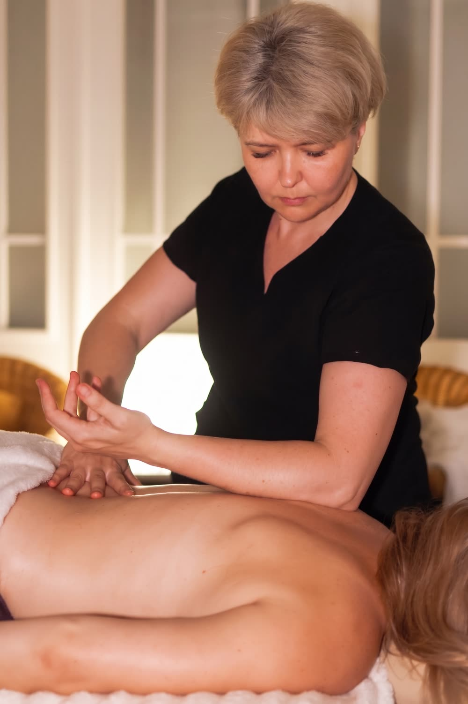

Masaże ciała · Poznań
Dla napięcia, które trwa tygodniami i wraca w to samo miejsce po każdym rozluźnieniu. Wolna, precyzyjna praca z głębiej położonymi mięśniami, ich przyczepami i powięzią — bez pośpiechu i bez siłowania się z ciałem.

Na czym polega
To rozróżnienie decyduje o całym zabiegu. Głębokość dotyczy warstwy, na której pracujemy — nie siły nacisku. Do tkanek położonych głębiej nie da się dotrzeć na siłę: mięsień spięty w obronie odruchowo się napina i zamyka dostęp. Dlatego pracujemy wolno, w rytm Twojego oddechu, a nacisk dobieramy tak, żebyś mogła albo mógł spokojnie wydychać powietrze.
Ten masaż jest też celowany. Nie „przerabiamy” całego ciała po kolei — szukamy źródła problemu, a ono często leży gdzie indziej niż miejsce, które boli. Ból między łopatkami bywa efektem napięcia klatki piersiowej, a ból lędźwi — skróconych zginaczy bioder u kogoś, kto siedzi osiem godzin dziennie.

Korzyści
Gdy to samo miejsce odzywa się od miesięcy i nie odpuszcza po zwykłym rozluźnieniu.
Uczucie „kamienia” między łopatkami u osób pracujących przy komputerze.
Trudność ze skrętem głowy, sięgnięciem za plecy czy pełnym wyprostem biodra.
Łydki i pasmo biodrowo-piszczelowe u biegaczy, barki u pływaków, przedramiona przy mocnym chwycie.
Jak przebiega zabieg
Gdzie boli, od jak dawna, co nasila objawy, czy był uraz i czy jesteś pod opieką specjalisty.
Terapeutka bada okolicę palpacyjnie i planuje pracę — często zaczyna dalej od miejsca bólu.
Praca w poprzek włókien, rozluźnianie mięśniowo-powięziowe i punkty spustowe, w rytm oddechu.
Mówimy wprost, czy widzimy sens w serii, i co robić między wizytami.
Czas trwania i cena
Praca jest wolna i nie da się jej przyspieszyć bez utraty efektu, więc czas dobiera się do liczby obszarów, nie do siły nacisku. Jeden konkretny punkt zmieści się w 40 minutach; plecy z obręczą barkową potrzebują godziny.
Przeciwwskazania
Przyjdź bez alkoholu i bez leków przeciwbólowych wziętych tuż przed wizytą — maskują ból, a wtedy nie da się bezpiecznie dozować nacisku. Ból promieniujący do kończyny, drętwienie albo osłabienie siły wymaga najpierw oceny lekarza lub fizjoterapeuty. Więcej w naszym przewodniku po masażu tkanek głębokich.
FAQ
Zdrowotny pracuje szerzej — nad partią, która sprawia kłopot, w umiarkowanym tempie. Tkanki głębokie są węższe i wolniejsze: schodzimy do głębiej położonych warstw i powięzi w jednym, konkretnym miejscu. Jeśli napięcie ustępuje po zwykłym rozluźnieniu, wystarczy zdrowotny. Jeśli wraca od miesięcy w to samo miejsce, sens ma ten zabieg.
Jest odczuwalny, ale nie powinien wymagać zaciskania zębów. Sprawdzianem jest oddech: jeśli w trakcie ucisku potrafisz spokojnie wydychać powietrze, nacisk jest dobrze dobrany. Wstrzymywanie oddechu oznacza, że jest za mocno — mięsień napięty w obronie i tak nie ustąpi, więc mocniej nie znaczy skuteczniej.
Napięcie, które budowało się latami, rzadko ustępuje po jednym spotkaniu. Przy problemie przewlekłym planujemy zwykle serię 3–6 zabiegów co 1–2 tygodnie, a potem wizyty podtrzymujące co 3–6 tygodni. Po pierwszej wizycie powiemy szczerze, czy widzimy sens w serii.
40 minut wystarczy na jeden dobrze zlokalizowany obszar — kark albo sam odcinek lędźwiowy. Przy plecach z obręczą barkową realnym minimum jest godzina, bo praca jest wolna i nie da się jej przyspieszyć bez utraty efektu. 80 i 90 minut to warianty na kilka powiązanych obszarów.
Tego samego dnia lepiej odpuścić mocny trening. Spokojny ruch i spacer są wskazane. Przez 24–48 godzin może utrzymywać się tkliwość podobna do zakwasów — to spodziewany efekt. Ostry ból albo dyskomfort dłuższy niż 2–3 dni oznacza, że bodziec był za duży, i przy kolejnej wizycie pracujemy łagodniej.
Chcesz wiedzieć więcej przed wizytą? Przeczytaj nasz przewodnik: Masaż tkanek głębokich — na czym polega i komu naprawdę pomaga.
Rezerwacja online
Wybierz dogodny termin online — potwierdzenie otrzymasz od razu.
Używamy niezbędnych plików cookies, żeby strona działała. Za Twoją zgodą chcemy też korzystać z Google Analytics, żeby wiedzieć, które podstrony są przydatne. Wybór możesz zmienić w każdej chwili. Szczegóły w polityce prywatności.
Potrzebne do działania strony i zapamiętania Twojego wyboru. Nie można ich wyłączyć.
Google Analytics — zagregowane statystyki odwiedzin. Domyślnie wyłączone.